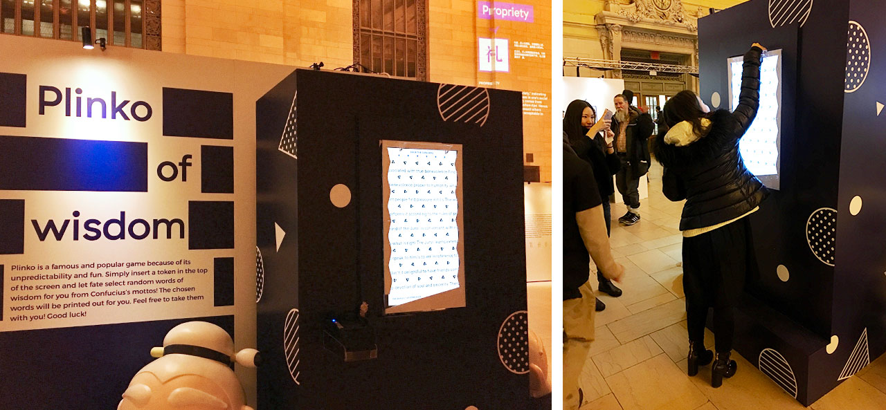

"Ancient Chinese philosopher Confucius now has a new look for the US market with the ongoing cultural event Hello Kongzi that was co-organized by Shandong Tourism Bureau and Shenzhen Broad Link Culture & Creative." -- China Daily
The event featured interactive demonstrations of Confucius' ideas with 8 interactive installations, such as interactive VR experience, Plinko of Wisdom machine, pop quiz machine etc.
The event was Produced by 3DROPS STUDIO. Our role was technology director and we provided services including interaction design, electronic engineering, rapid prototyping, software development, digital fabrication, installation, and maintenance.
Hello Kongzi
Location:Grand Central Terminal and Times Square
Year:2016
Dimensions:3700 sqft
250 sqm
Services:Interaction Design
Electronic Engineering
Software Development
Rapid Prototyping
Digital Fabrication
Installation
Maintenance
Press:XinHuaNet.com 新华网: Hello Kongzi 闪亮登陆纽约 好客山东走出国门
ChinaDaily.com 中国日报: New Yorkers meet an approachable Confucius at Hello Kongzi event
BrandCN.com 品牌中国网: HelloKongzi潮动纽约，见证东方文化遇到西方时尚
Hello Konzi Event at Grand Central Terminal. photo credit Three Drops Studio
“Pose and Say Cheese!”, an installation that generates a pose for you to unlock: try to adjust your hands, elbows and waist to match the image on the screen. It used a Kinect to capture human figures and asses if you’ve done the pose correctly. After unlocking the pose, you can download your pose photo with Confucius.
Plinko is a popular game because of its unpredictability and fun. Simply insert a token from the top of the screen and let fate select random words of wisdom for you from Kongzi’s mottos! The chosen words will be printed out in the end of the game.
Virtual reality(VR) experiment zone, left installation “Peek and Stroke”, right installation “Road trip on Chariot.”
A VR gadget was inside each helmet. With the left installation, you can learn to write a Chinese character by using a Chinese writing brush and following the instructions on the VR screen.
With the right installation, you could “experience a horse-riding experiment in an ancient Chinese city in the era of Confucius… almost everyone was awed by the accessible and life-based experience by wearing a helmet and holding the electronic horsewhip that could control the speed of the horse.” — comments from China Daily
“Face Off” used face tracking technology to detect your face and put funny decorations and phrases on it.
“Pop Quiz!” is a machine testing your knowledge of the history of China. The questions picked interesting facts from Chinese history, geography and literature. In the end of the quiz, participants will get rewards from the bottom the machine.
Hello Konzi Event at Times Square. photo credit Three Drops Studio
People played with the interactive installations at Times Square.
Interaction design and flowcharts of selected interactive installations.

Event Poster. photo credit 3Drops Studio